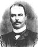
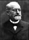
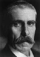
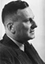

Malaria has always been the subject of research for medical practitioners from time immemorial. Many ancient texts, especially medical literature, mention of various aspects of malaria and even of its possible link with mosquitoes and insects.
{kind=link}
Susruta
Early man, confronting the manifestations of malaria, attributed the fevers to supernatural influences: evil spirits, angered deities, or the black magic of sorcerers. The ancient Chinese believed the frightening symptoms and signs to be the work of three demons, one with a hammer, one with a pail of cold water, and a third with a stove. The ancient Romans worshiped a fever goddess, three demons rolled into one. The connection between malaria and swamps was known even in antiquity and the evil spirits or malaria gods were believed to live within the marshes.
| Time Line For Scientific Discoveries |
| Ancient Times |
| Early man attributed the fevers to evil spirits, angry deities, demons, or the black magic of sorcerers |
| Several thousand years ago |
| Babylonian cuneiform script attributed malaria to a god, pictured as a mosquito-like insect |
| 800 BC |
| Indian sage Dhanvantari supposedly wrote that bites of mosquitoes could cause diseases, fever, shivering etc. |
| 400 BC |
| Hippocrates described the various malaria fevers of man; distinguished the intermittent malarial fever from the other continuous fevers; noted the daily, every-other-day, and every-third-day temperature rise; mentioned about splenic change in malaria; attributed malaria to ingestion of stagnant water; also related the fever to the time of the year and to where the patients lived. |
| 300 BC |
| Charaka Samhita in India classified the fevers into five different categories, namely continuous, remittent, quotidian, tertian and quartan fevers. |
| 100 BC |
| Susruta Samhita in India associated fevers with the bites of the insects |
| First Century BC |
| Roman agriculturist Collumella suggested that diseases could be caused by animals that bred in the marshes |
| First Century AD |
| Roman scholar Marcus Terentius Varro suggested that the grave maladies were caused by inhalation of certain animalcula that bred in the swamps |
| 30 AD |
| Celsus described two types of tertian fevers |
| 160-200 AD |
| Galen suggested that malaria was due to a disorder in the four humors of the body and suggested bleeding and/or purging as treatment; this view stayed for 1500 years |
| 1696 AD |
| Morton presented the first detailed description of the clinical picture of malaria and its treatment with cinchona. |
| 1712 AD |
| Fransesco Torti accurately described the intricate course of the disease that was curable by cinchona |
| 1716-1717 AD |
| Lancisi first described a characteristic black pigmentation of the brain and spleen in the victims of malaria. He linked malaria with poisonous vapours of swamps or stagnant water on the ground. In 1717, in his monograph titled Noxious Emanations of Swamps and Their Cure, he echoed the view that malaria was due to minute “bugs” or “worms” which entered the blood; revived the old idea that mosquitoes might play a role. |
| 1796 AD |
| John Crawford, an American physician, contradicted the bad-air theory and suggested that the eggs, laid during a mosquito bite, hatched in the wound and migrated through the host’s body, producing the manifestations of malaria |
| 1816 AD |
| Giovanni Rasori doubted the “bad air” theory and suggested that a microorganism may be responsible for the disease |
| 1847 AD |
| German physician, Heinrich Meckel, identified round, ovoid, or spindle-shaped structures containing black pigment granules in protoplasmic masses in the blood and in the spleen; he probably saw the malaria parasites for the first time, but could not recognize the true importance of his finding |
| 1848-1850 AD |
| Schutz, Virchow and Hischl confirmed the presence of pigment with intermittent fevers. |
| 1850 AD |
| American Josiah Clark Nott dismissed the miasma theory and suggested that microscopic “insects” transmitted by mosquitoes caused both malaria and yellow fever |
| 1854 AD |
| Beauperthy, American naturalist, wrote that malaria and yellow fever were produced by venomous fluid injected under the skin by mosquitoes |
| 1878-79 AD |
| Edwin Klebs and Corrado Tommasi-Crudeli announced the “discovery” of Bacillus malariae, a bacteria that supposedly caused malaria |
| November 6, 1880 |
| Charles Louis Alphonse Laveran, a French physician working in Algeria , found a moving object while examining a fresh blood film from a patient of malaria. He called this parasite Oscillaria malariae. |
| 1881 |
| George Sternberg, American bacteriologist proved that the Bacillus malariae was not responsible for malaria |
| 1882 |
| Albert Freeman Africanus King, a gynecologist at George Washington University, suggested that the mosquito was the real source of malaria |
| 1884 |
| Russian physiologist, Basil Danielewsky identified malaria parasites in the blood of wild birds |
| 1884 |
| Marchiafava and Celli demonstrated active amoeboid ring in the unstained blood and named it Plasmodium |
| 1886 |
| Louis Pasteur, William Osler and Camillo Golgi confirmec Laveran’s finding |
| 1886 |
| Pel suggested the existence of a tissue stage of the parasite |
| 1886 |
| Golgi observed that the tertian and quartan forms produced differing numbers of segmentations on maturity; also demonstrated that the fever coincided with the rupture and release of merozoites into the blood stream |
| 1889-90 |
| Sakharov in 1889 and Marchiafava and Celli in 1890 identified the parasites that caused malignant tertian fever separately from the ones causing tertian and quartan fevers. Grassi and Raimondo Filetti first differentiated and introduced the names Haemamoeba vivax and H. malariae for two of the malaria parasites in 1890 |
| 1891 |
| Romanowsky described better staining methods for identifying malarial parasites |
| 1893 |
| Golgi suggested that malaria parasites may have an undiscovered tissue phase in endothelial cells not affected by antimalarial drugs and could be the source of relapses. |
| 1897 |
| William G. McCallum and Opie demonstrated the sexual process of the malaria parasite. |
| August 20, 1897 |
| Ronald Ross demonstrated oocysts in the gut of anopheline mosquito at Secunderabad, India, proving that mosquito was the vector for malaria |
| July, 1898 |
| Ronald Ross demonstrated the sporozoites in the salivary glands of the mosquito and also transmitted malaria to birds through infected mosquitoes. |
| September, 1898 |
| Giovanni Battista Grassi transmitted vivax malaria to a human volunteer |
| 1900 |
| Patrick Manson transmitted malaria to volunteers in London from infected mosquitoes brought from Italy. |
| 1911 |
| Brown suggested the hematin origin of the ‘black pigment’ and suggested the action of a proteolytic enzyme on hemoglobin to be the most probable mode of elaboration of the malaria pigment |
| 1922 |
| P. ovale was identified by John WW Stephens |
| 1948 |
| Shortt & Garnham demonstrated the tissue form of P. vivax malaria |
| 1975 |
| William Trager cultured P. faliciparum inside red blood cells |
| 1977 |
| Lysenko et al suggested that latent forms of P. vivax malaria caused relapses |
| 1987 |
| Manuel Elkin Patarroyo, a Colombian biochemist, developed the first synthetic Spf66 vaccine against P. falciparum |
| 2002 |
| The genome of Anopheles gambiae and Plasmodium falciparum sequenced |
| 2008 |
| The genome of P. vivax and P. knowlesi sequenced |
One of the oldest scripts, written several thousand years ago in cuneiform script on clay tablets, attributes malaria to Nergal, the Babylonian god of destruction and pestilence, pictured as a double-winged, mosquito-like insect. In 800 BCE the Indian sage Dhanvantari wrote that bites of mosquitoes could causes diseases, fever, shivering etc. The Charaka Samhita written in approximately 300 BCE, classified the fevers into five different categories, namely continuous fevers, remittent fevers, quotidian fevers, tertian fevers and quartan fevers. Susruta Samhita, written about 100 BCE, associated fevers with the bites of the insects.
{kind=link}
Hippocrates
Hippocrates was probably the the first malariologist. By 400 BCE, he described the various malaria fevers of man. Hippocratic corpus distinguished the intermittent malarial fever from the continuous fever of other infectious diseases, and also noted the daily, every-other-day, and every-third-day temperature rise. The Hippocratic corpus was the first document to mention about splenic change in malaria and also it attributed malaria to ingestion of stagnant water: “Those who drink [stagnant water] have always large, stiff spleens and hard, thin, hot stomachs, while their shoulders, collarbones, and faces are emaciated; the fact is that their flesh dissolves to feed the spleen…” Hippocrates also related the fever to the time of the year and to where the patients lived.
The recurrence of malaria is a phenomenon that was known to the ancients and first recorded by Roman Poet Horace (December 8, 65 BCE – November 27, 8 BCE) in his third satire.
{kind=link}
Noting the phenomenon of shaking chills recurring consistently, the ancient Romans named the disease by measuring the elapsed time from the beginning of the first episode to the end of the second. Thus, fever recurring on Tuesday and Thursday was called a tertian or “every third day” fever, although only forty-eight hours separated the two attacks. A fever appearing on Tuesday and Friday was be called quartan. A number of Roman writers attributed malarial diseases to the swamps. In ancient Rome, human habitation in mosquito-infested districts were routinely prohibited and shepherds returning from a summer in the Apennines furnished their small cabins with a few sheep to satisfy the mosquitoes so as to protect themselves from malaria. In first century B.C., a Roman agriculturist Collumella wrote thus: “A marsh always throws up noxious and poisonous steams during the heats and breeds animals armed with mischievous stings which fly upon us in exceeding thick swarms… whereby hidden diseases are often contracted, the cause of which even the physicians themselves cannot thoroughly understand.”
In the first century CE, Roman scholar Marcus Terentius Varro (116-27 BCE) suggested that swamps breed “certain animalcula which cannot be seen with the eyes and which we breathe through the nose and mouth into the body, where they cause grave maladies.”
{kind=link}
By about 30 CE, Celsus described two types of tertian fevers and agreed with the views expressed by Varro. However, all these excellent observations were subverted for centuries by Galen’s dogmatic, widely accepted medical theories that attributed malaria to internal causes.
{kind=link}
Claudius Galenus of Pergamum (131-201 CE), more popularly known as Galen, was an ancient Greek physician who worked in Rome from 162 CE, where he attained a brilliant reputation as a practitioner and a public demonstrator of anatomy. His influence held sway for more than 1500 years. He recognized the appearance of fevers with the summer season and a jaundice in infected people. But he believed that malaria was due to a disorder in the four humors of the body. According to him, tertian fever was the result of an imbalance of yellow bile; quartan was caused by too much black bile, and quotidian by an excess of phlegm and a blood abnormality was the cause of continuous fever. Galen suggested that the normal humoral balance should be restored by bleeding, purging, or both. Vomiting accompanying malaria was believed to be the body’s attempt to expel poisons. The bleeding supposedly rid the body of “corrupt humors.” These tenets were accepted without question for the next fifteen hundred years.
In 1696 Morton presented the first detailed description of the clinical picture of malaria and its treatment with cinchona. Morton also suggested that the disease is produced by some poison which enters the body from without. Fransesco Torti, professor of medicine at Modena, accurately described the intricate course of the disease that was curable by the cinchona in 1712.
Giovanni Maria Lancisi (1654-1720)
By early seventeenth century, Italian physician Giovanni Maria Lancisi made some astounding observations on malaria.
{kind=link}
Lancici
Lancisi was born in Rome in 1654 and studied theology before turning to natural science. After mastering anatomy, chemistry, and botany at the Collegio de Sapienza, he was awarded his doctorate at age eighteen. By age thirty he had been appointed professor of anatomy at his alma mater, and at age forty-three he was named professor of the theory and practice of medicine, a position he held until his death in 1720.
Lancisi’s extraordinary powers of observation soon attracted the attention of Pope Innocent XI, who appointed him a papal physician in 1688. Innocent XII and his successor, Clement XI, renewed the appointment. When Clement commissioned Lancisi to investigate the cause of sudden death in Rome, the resulting study became a classic in the history of cardiology. A voluminous writer, Lancisi composed three other major treatises, including the importantAneurysms of the Heart and Blood Vessels, a work that lucidly describes the vascular changes in syphilis. But today he is best known for his two-volume monograph Noxious Emanations of Swamps and Their Cure.
In 1716, Lancisi first described a characteristic black pigmentation of the brain and spleen in the victims of malaria. Lancisi linked malaria with poisonous vapours of swamps or stagnant water on the ground. In 1717, in his monograph titled Noxious Emanations of Swamps and Their Cure, he echoed the old theories of Varro and Celsus by speculating that malaria was due to minute “bugs” or “worms” which entered the blood and revived the old idea that mosquitoes might play a role.
Lancisi postulated two ways in which malaria might be spread by mosquitoes. In one, the insects deposit microscopic organisms in uncovered food and drink, and the human consumption of this contaminated material produces the disease. Lancisi’s second postulated mechanism was the correct one for malaria. Mosquitoes, he writes, “always inject their salivary juices into the small wounds which are opened by the insects on the surface of the body.” Because “all their viscera are filled with deleterious liquids…no controversy can arise among professional men concerning the harmful effect which the insects of the swamps, by mixing their injurious juices with the saliva…inflict upon us.” But, lacking proof, Lancisi conceded that there might still be some validity in the old bad-air theory. Lancisi also proposed the draining of marshes to eradicate malaria.
For considerable time it was believed that the vapours were given off by marsh vegetation and some held that microscopic animals elaborated them. One American physician, James K. Mitchell, wrote that malaria was due to certain spores present in marshy regions. In 1796, John Crawford, physician living in America, wrote a series of essays contradicting the bad-air theory. He asserted that malaria was “occasioned by eggs insinuated, without our knowledge, into our bodies.” These eggs, laid during a mosquito bite, hatched in the wound and migrated through the host’s body, producing the manifestations of malaria. But these notions were considered as absurd by contemporaries and the local medical journals summarily rejected all of Crawford’s articles. Soon he was being disparaged so loudly that his medical practice began to suffer. Fearing ruin, he carried his ideas no further.
{kind=link}
Rasori
But the swamp theory finally started to crumble. In 1816, Giovanni Rasori (1766-1837) of Parma, while suffering from malarial fever in prison, doubted the “bad air” theory and suggested that a microorganism is responsible for the disease. “For many years,” he wrote, “I have held the opinion that the intermittent fevers are produced by parasites which renew the paroxysm by the act of their reproduction which recurs more or less rapidly according to the nature of the species.”
{kind=link}
Two other Americans, Josiah Clark Nott and Lewis Daniel Beauperthy, echoed Crawford’s ideas. Nott in his essay “Yellow Fever Contrasted with Bilious Fever,” published in 1850, dismissed the miasma theory as worthless, arguing that microscopic “insects” somehow transmitted by mosquitoes caused both malaria and yellow fever. In 1854, Beauperthy, a “traveling naturalist”, wrote that malaria and yellow fever “are produced by venomous fluid injected under the skin by mosquitoes like poison injected by snakes.” Marshes and swamps, he added, were not made treacherous by their miasmic vapors but by the mosquitoes that proliferated within them.
The black pigment, first noted by Lancisi 1716, was again identified by many workers in mid nineteenth century. In 1847, a German physician, Heinrich Meckel, identified round, ovoid, or spindle-shaped structures containing black pigment granules in protoplasmic masses in the blood of a patient with fever and in the spleen during an autopsy of an insane person. Thus Meckel probably saw the malaria parasites for the first time, but could not recognize the true importance of his finding. In 1848 Schutz specifically associated these pigments with malaria when he observed it in the internal organs of patients who had died of malaria. In 1849, Virchow demonstrated pigmented bodies in the blood of a patient who had died from chronic malaria. In 1850, Hischl confirmed the presence of pigment with intermittent fevers. In 1878, a Mississippi jury convicted a person for murder on the basis of finding malaria pigment in the blood stains. But even with all this, the black granular bodies were somehow never suspected to be the cause of malaria until 1879, when Afanasiev proposed that these bodies might be the agents of the disease.
{kind=link}
By 1878-79, malaria research took a wrong turn. It was announced that a a malaria bacillus had been found. Under the spell of the germ theory of disease when all epidemic diseases were sought to be blamed on bacteria, this announcement was greeted with much excitement and very little skepticism. Edwin Klebs, the German pathologist who had isolated the diphtheria bacillus, and Corrado Tommasi-Crudeli, an Italian bacteriologist, isolated a microbe from the soil, a short rod that they named Bacillus malariae, in Roman Campagna. This organism, they wrote, could be found in damp soil and low-lying air in malarious regions, and would grow on fish gelatin. Soil infested with the bacteria, when injected into rabbits, was said to produce a malarial fever and enlargement of the spleen; soil from malaria-free regions caused a different sort of fever and splenic change. The two authors even asserted that humans receiving an injection of pure Bacillus malariae cultures would develop the symptoms of malaria. Probably no scientific article ever written has contained more wishful thinking than this one. In an 1879 editorial, one prestigious British medical journal even declared that the malaria problem had been solved.
{kind=link}
Laveran
Finally, it was Charles Louis Alphonse Laveran, a French physician working in Algeria and a student of Pasteur, who identified the malaria parasite in 1888. After his medical school and war time duties, Laveran was transferred to the military hospital at Constantine, Algeria in 1878. In Constantine, Laveran was confronted with hospitals full of malaria. The calm, reserved, unemotional but exceptionally astute Laveran sweated under the burning Algerian sun for two years as he pored over tissue specimens from malaria victims. The autopsies of victims showed the graphite pigmentation of the brain and spleen and black granular microscopic bodies in the blood that were long ago described by others. When all his efforts revealed nothing more he decided to confine his search to the fresh blood of malaria patients and began taking blood specimens from pinpricks in the fingers of sick soldiers. After spreading a droplet into a thin film on a glass slide, he would peer at it for hours through a small, crude microscope. On November 6, 1880, while examining a fresh blood specimen taken from a new hospital arrival, a moving object on the slide caught Laveran’s eye. Under high power, this proved to be a tiny malarial body wriggling vigorously. Laveran watched amazed as the little crescent-shaped object lashed about so energetically that an entire red blood cell jiggled. Even the pigment granules appeared to be in frenzied motion. This important observation could never be made before, probably because no previous investigator had used wet blood films. Laveran immediately knew that he had found a living organism that caused malaria and named the parasite Oscillaria malariae. He identified it within the blood of 148 other patients out of a total of 192 examined. Laveran believed that the tertian, quartan, and quotidian malaria occurred during different stages in the parasite’s development. On December 24, 1880 in Italy, Laveran communicated the identification of pigmented erythrocytic cells in 26 malaria patients. His descriptions included crescents (gametocytes), pigmented trophozoites, and the process of exflagellation.
Laveran wrote a letter to the Academy of Medicine in Paris, communicating his discovery. The observations were quickly confirmed. Laveran reported them to a friend, Dr. E. Richard, stationed at Philippeville, a French Mediterranean military base fifty miles from Constantine. After finding the fully developed, wriggling parasite, Richard identified an even younger form than Laveran had seen, merely a tiny, colorless spot in the red cell. Laveran believed that the organism lived on the surface of the cell, but Richard correctly observed that it developed within the cell, growing larger and larger until it finally burst out.
But under the sway of bacteriology, the scientific community remained unconvinced about Laveran’s discovery. The arguments presented by Klebs and Tommasi-Crudeli for their Bacillus malariae had been accepted almost without question, and an Italian pathologist, Ettore Marchiafava, even claimed to have found the bacillus in several dead malaria patients. Laveran traveled to Rome in 1882 to demonstrate the parasites to Marchiafava and Agnello Celli, but these two could not be convinced.
{kind=link}
Sternberg
The US Army sent Major George Sternberg, a bacteriologist of considerable standing, to study malaria in New Orleans, where the incidence was particularly high. He made bacterial cultures from the air, from mud, and from nearby marshes and no organism he found was capable of producing malaria in an animal. By 1881 he had shown positively that the Bacillus malariae of Klebs and Tommasi-Crudeli was not responsible for malaria.
Meanwhile, in 1884, Russian physiologist, Basil Danielewsky was able to observe parasites of malaria in the blood of wild birds. The same year, Louis Pasteur became convinced of the soundness of Laveran’s observations.
In 1884, Marchiafava and Celli, while studying wet blood smears from malarious patients with the new oil-immersion lens, looked at unstained blood and saw a active amoeboid ring (trophozoite) in the red blood cells. They published this finding and named it Plasmodium, but did not refer to Laveran since they thought it was something different from what he showed them. The name chosen for the parasite by them turned out to be an incorrect one, since the organism is not actually a plasmodium. But the name stuck despite years of haggling.
{kind=link}
Councilman
In 1884, at the Bayview hospital in Baltimore, Maryland, Dr. William T. Councilman performed autopsies on two fatal cases of malaria. He described the brain as a dull chocolate color, lungs inflated and contained much pigment, the liver large, soft and of a dark slatey color. Pigment was the consistent pathologic link of severe fatal disease to malaria.
{kind=link}
Dr. William Osler, an authority on blood microscopy, was also skeptical of Laveran’s theory. In 1886 he stated that the malarial bodies were nothing more than incidental findings. When his colleague, Dr. William T. Councilman, persuaded him to reconsider, Osler spent many hours looking at wet-blood films and confirmed Laveran’s findings with his own description of blood film examinations from 70 patients. He also detailed excellent drawings of the parasites and related forms seen with different types of malaria fever. Osler also instituted routine blood smear analyses to diagnose malaria in the work-up of febrile patients at Johns Hopkins Hospital. Yet in the first edition of his textbook, The Principles and Practice of Medicine, in 1892, Osler continued to maintain a peculiar ambivalence toward the cause of malaria.
In 1885 Camillo Golgi, an Italian neurophysiologist, established that there were at least two forms of the disease, one with tertian periodicity (fever every other day) and one with quartan periodicity (fever every third day).
{kind=link}
Golgi
Camillo Golgi was a rare scientist to develop both a new instrument and new ideas. He was the inventor of a revolutionary staining technique for nerve tissue. The “reazione nera,” or black reaction, which he discovered in 1873 after systematic experiments, consisted of immersing specimens in silver nitrate after fixation with potassium dichromate. He also formulated a theory that nerve-cell processes formed a giant anastomotic network. His name is also linked with the discovery of several microscopic cellular structures (tendon organ, muscle spindle) and subcellular structures (the Golgi apparatus). He is also known for his contributions to general medicine with regard to intestinal-worm infections, Bright’s disease of the kidney, and especially malaria.
In 1886 he was the first to observe that the tertian and quartan forms produced differing numbers of segmentations on maturity, implying that the two diseases were caused by two distinct parasites. He also demonstrated that the fever coincided with the rupture and release of merozoites into the blood stream and that the severity of symptoms correlated with the number of parasites in the blood. (He was awarded a Nobel Prize in Medicine for his discoveries in neurophysiology in 1906). Camillo Golgi was also the first to photograph the pigmented quartan malaria parasite in 1890. Many scientists accepted Golgi’s findings, but others, including Laveran, did not. The dissenters were apparently not ready to accept the fact that there existed many varieties of malaria parasite that caused the same disease in birds, monkeys and man (as was known by then from studies of Danielewsky and others). In 1891, Romanowsky described staining methods for identifying malarial parasites and with the better blood-staining methods available, Golgi was shown to be correct. It became clear that many parasite varieties did indeed exist, developing in the blood at different rates and that in each species there was a segmented form that reproduced by division and an ovoid form that never segmented. In 1893, presaging discovery of tissue stages of human malarial parasites by over 50 years, Golgi suggested that parasites of human malaria may have an undiscovered tissue phase in endothelial cells not affected by antimalarial drugs and that the protected parasites could be the source of relapses.
However, the first to publish a theory regarding the existence of a tissue stage of the parasite was Pel in 1886. Pel’s explanation of long-term malarial latency was as follows. “During the latent period the germ is fixed somewhere or not able to reproduce, until by some cause its conditions for life become more favorable. Then the germs can multiply or shift to another more active stage of development, reach the blood and cause particular disease symptoms.”
{kind=link}
The nomenclature of malaria parasites has been a matter of intense debate and acrimonious confusion. Laveran had seen different forms of the malaria parasite in 1880 and firmly believed that all of the parasites belonged to one species, and he called them Oscillaria malariae. In 1884 Marchiafava and Celli called the same forms as Plasmodium. Sakharov in 1889 and Marchiafava and Celli in 1890 identified the parasites that caused malignant tertian fever separately from the ones causing tertian and quartan fevers. The Italian investigators Giovanni Batista Grassi and Raimondo Filetti first differentiated and introduced the names Haemamoeba vivax and H. malariae for two of the malaria parasites in 1890. In 1892, Grassi and Feletti, as an honor to Laveran, proposed the genus name Laverania which was zoologically correct. In 1897, an American, William H. Welch, proposed the name Haematozoon falciparum for the parasite with the crescent-shaped gametocytes and causes malignant tertian malaria. A generic name Haemomonas was also proposed. Confusion continued well into the 20th century over whether all of the parasites belonged to one species or to several. The genus name Plasmodium of Marchiafava and Celli was maintained for all species. The species name of the parasite suggested by Laveran as malariae, by Grassi and Feletti as vivax and by Welch as falciparum continued. What parasites Laveran saw and described thus came to be known later as P. malariae and gametocytes of P. falciparum. A change back to the name given by Laveran was not possible as the use of these terms had already become extensive in the literature. The fourth human parasite, P. ovale was identified by John William Watson Stephens in 1922.
{kind=link}
Thayer
Meanwhile in 1895, Thayer and Barker compiled 616 well documented malaria cases complete with fever curves and species-specific blood film microscopy, plus four autopsies of three P. falciparum cases and one P. vivax case. In 1897 Thayer published a series of lectures with several references to relapse in vivax malaria. In his speculations to explain latency, which must obtain preceding a relapse, he postulated that there must be an undiscovered form of the parasite. He wrote “the organism may remain perhaps within the cell body of certain phagocytes for long periods of time, only to be set free again as a result of some insult, the nature of which is not as yet appreciable to us.”
{kind=link}
McCallum
The true nature of the ovoid forms seen by Laveran and others was unclear. Many scientists, noting that this phenomenon took place only in blood removed from the body, believed with Laveran that they were witnessing nothing more than a “death spasm.” Such a notion fit in with the old Hippocratic idea that malaria might come from ingesting stagnant water, and it also conformed to a newer theory that the organism was transmitted by contaminated water, as was cholera.
In 1897, Dr. William G. McCallum and Opie of the Johns Hopkins Hospital demonstrated the sexual process of the malaria parasite. By using the pigmented Halteridian species, Haemoproteus columbae MacCallum observed under a glass slide the penetration of a vermicule from a male gametocyte into a rounded female gametocyte. Later, they confirmed their findings in the case of P. falciparum. More study suggested that only plasmodia outside the body behaved in this fashion.
{kind=link}
King
Meanwhile, on February 10, 1882, Albert Freeman Africanus King, a gynecologist at George Washington University and author of an obstetrics textbook, presented his ideas on malaria to the Philosophical Society of Washington, and in September 1883 this lecture was published in Popular Science Monthly. The characteristics of malaria, King said, “may be explicable by the supposition that the mosquito is the real source of the disease rather than the inhalation or cutaneous absorption of a marsh vapor.” After listing nineteen sound reasons for implicating the mosquito as the vector, he added, “While the data to be presented cannot be held to prove the theory, they may go so far as to initiate and encourage experiment and observation by which the truth or fallacy of the views held may be demonstrated.. which either way, will be a step in the line of progress….” He went on to suggest a grandiose and impractical plan for malaria control in Washington DC. He claimed that Washington could be ridded of malaria by surrounding the entire city with an enormous screen of fine mosquito netting as high as the Washington Monument. This was greeted with an enormous guffaw and even today no one is certain whether King was serious or attempting a joke. But this certainly discouraged anyone reading his paper from testing the highly sensible mosquito hypothesis.
Many others thought of mosquitoes as a possible cause for transmission of malaria. Laveran expressed such an idea briefly in 1884, evidently independently of King. Seven years later he mooted the same idea again very briefly and without giving many reasons. Robert Koch during his first visit to India in the winter of 1883-1884 for research on cholera came in contact with malaria and thought of a possibility of mosquitoes spreading the disease. R. Pfeiffer talked about the same idea in 1892.
{kind=link}
Manson
Patrick Manson then working in China was also speculating about the nature of malaria. He sought to draw a comparison between malaria and filariasis, for which the mode of transmission by mosquitoes was discovered by him. In 1878 Manson had begun to study the blood of malaria patients looking for a blood borne agent as its cause, but abandoned the effort when he could not find any. In 1881, when he learned of the supposed discovery of the “Bacillus malariae” by Klebs and Tommasi-Crudeli he tried again but was never able to isolate the bacillus from the blood of a malaria victim. Having moved rom Amoy to Hong Kong in December 1883, he learned of Laveran’s discovery in 1884 and immediately set out to identify the parasite for himself, but failed yet again. After returning to Scot land in 1889, he joined the Seamen’s Hospital Society in London in 1890 where he could get the the blood specimens of sailors from all parts of the world. He could finally see Laveran’s malarial parasite and he studied the observations of Golgi, Laveran, and others. He then confirmed to his own satisfaction that there were indeed several species of parasite that could infect a human being, each having its own appearance and producing its own symptoms and signs.
Especially intriguing to Manson was “exflagellation,” the formation by the ovoid form of the tiny, whip-like appendages first reported by Laveran. Manson did not agree with the death spasm theory. To him, the exflagellation represented another phase in the parasite’s development. “Since the flagella appear only when malarial blood gets outside the body,” he reasoned, “their purpose must be to continue the life of the parasite in the outer world.” This logic had stimulated him to seek an extracorporeal form of the filaria of elephantiasis and had led directly to his discovery of the mosquito as the vector. In addition, an American doctor, Theobald Smith, and an epidemiologist, F. L. Kilborne had proved in 1893 that Texas cattle fever was produced by a parasite that went through a developmental phase within cattle ticks that transmitted the disease and in 1894, David Bruce, a British medical officer, identified the trypanosome as the causative organism and tsetse fly as the vector of an African animal infection, called nagana.
Reasoning by analogy with the findings of Smith, Kilborne, and Bruce, Manson postulated a mechanism for the transmission of malaria. According to his schema, when a mosquito fed on the blood of a human with malaria, the flagellated form of the plasmodium ended up in the insect’s stomach. From there it migrated into the tissues, where it grew into a form capable of infecting another human. But Manson tripped up when postulating how the parasite passed from the mosquito back to man because entomologists at the time believed that the insect died after depositing its eggs in water. The parasites, Manson theorized, escaped from the dead mosquito’s body and were carried to the next victim by contaminated water. Thus he had neatly fitted in another piece of the puzzle, yet was still forced to fall back on the old Hippocratic notion that attributed malaria to the ingestion of stagnant water. This new theory of malarial transmission was quickly published. To allow it to gain acceptance, Manson eagerly accepted invitations to lecture on it and discuss it. The scientific establishment considered the theory wildly speculative, and Manson was not able to get hold of the malaria-carrying mosquitoes that would enable him to clinch his argument. He applied for a scientific grant so that he might travel to a malarious area abroad and collect the evidence he needed, but no money was forthcoming. Manson, however, was an indefatigable teacher and demonstrator, whose reputation as a tropical medicine expert continued to grow. Invariably younger men returning from the far comers of the Empire solicited his medical advice. And one of these men was Surgeon Major Ronald Ross of the Indian Medical Service.
{kind=link}
Ronald Ross
Ronald Ross was a reluctant physician who had hoped to revolutionize mathematics and write poetry, music, plays, and novels that he did not mind publishing at his own expense, but was stimulated into research by Manson that finally brought him the Nobel prize! Ross apparently set out on his scientific experiments without much expert reading on the literature that existed at the time, he came to know most of the things on his own! The mosquitoes that he encountered soon after landing in India were to occupy him for the rest of his life. During his work in many hospitals in India, Ross studied these insects in great detail and noticed many facts about their habits and habitats besides finding in them the vector for malaria. This single minded work paved the way for malaria control efforts later on.
Ross joined the Indian Medical Service in 1881 and during his initial years, was forced to tackle the mosquitoes. Outside his bungalow quarters he saw mosquitoes breeding in a barrel, swarming in to attack him through an open window. Ross solved the problem by simply tipping over the barrel. “When I told the adjutant of this miracle,” Ross wrote, “and pointed out that the mess house could be rid of mosquitoes in the same way (they were breeding in the garden tubs, in the tins under the dining table and even in the flower vases) much to my surprise he was very scornful and refused to allow men to deal with them..” He made such observations at many places and this later helped him to explain that malaria did not emanate from the marshes as was believed, but from pots and tubs thrown everywhere!
In 1892 Ross learned of Laveran’s discovery but was unable to see the parasites even after spending hours peering through his microscope at blood smears. Thoroughly exasperated, he strongly questioned the soundness of Laveran’s observations and even wondered if the Frenchman might have falsified his data. When he took his second furlough to England in 1894, he told his colleagues about his failure to see what Laveran had described. They sent him to Dr. Patrick Manson. Ross spent many hours following Manson on ward rounds at the Seamen’s Hospital and in Manson’s private laboratory. There, for the first time, Ross was able to locate the tiny malarial parasites under the microscope. Manson, impressed with this eager, capable student, expounded upon his ideas to Ross one November afternoon in 1894: “Do you know,” he remarked to Ross while the two were on the way to the hospital, “I have formed a theory that mosquitoes carry malaria just as they carry filaria.” This meeting with Manson was to change his life forever. Manson guided Ross throughout his research, suggested new approaches, encouraged Ross when he became depressed and came to his aid whenever superiors thwarted him. There was a continuous exchange of ideas between the two men, first directly and then by letter.
Manson suggested that the filaments in the crescents were actually living bodies and the mosquito sucked the filamented crescents into its stomach while feeding on the blood of a malaria patient. The filaments proceeded to travel through the stomach into the insect’s tissues. After the mosquito died laying its eggs, the “flagellated spores” emerged into the water, ready to infect anyone who came to drink.
These theories, which had earned for Manson the titles “pathological Jules Verne” and “Mosquito Manson,” sent the young Ross into raptures of ecstasy. Suddenly the fame that had eluded him despite years writing poems, music, plays, novels, and equations seemed within his grasp. He had but to prove what Manson had presented to sound like gospel truth. He went about it with an almost manic enthusiasm.
Following Manson’s instructions, Ross captured the ubiquitous mosquitoes and tried to induce them to bite malaria patients. But they obdurately refused to bite any one, even Ross. The mosquitoes caught were probably too frightened to bite, Ross reasoned. So he raised new mosquitoes from grubs. Still no luck. He baked the patients in the hot sun “to bring their flavor out.” Nothing happened. On May 13, 1895, Ross’ birthday, a heavy rain soaked the bed and netting of a malaria patient. Made ravenous by the moisture, the mosquitoes attacked the patient with alacrity. Ross grabbed four of them, expressed their ingested blood on a glass slide, and peered at it with his microscope. Just as Manson had prophesied, there were the parasites. To be certain of the results, Ross tried the same experiment with six more mosquitoes the next day. “Every point that you predicted seems to come true,” he wrote to Manson. “Certainly there is nothing contrary to the theory. The parasites are present in the blood of the mosquito, and what is even more, they appear to be there in greater numbers than in blood from the finger. Also, the development of the crescents, and the formation of the flagella, seem to be favored by conditions in the mosquito’s stomach. Yes, the crescent-sphere-flagella metamorphosis does go on inside the mosquito to a much greater degree than in control specimens of finger blood.”
Manson immediately wrote back with more instructions. “Let mosquitoes bite people sick with malaria,” he advised, “then put those mosquitoes in a bottle of water and let them lay eggs and hatch out grubs. Then give that mosquito-water to people to drink.”
So Ross allowed four mosquitoes to feed on a patient named Abdul Kadir. These insects were then kept in a bottle full of water until they died. After the promise of a suitable emolument, Lutchman, Ross’s native servant, was persuaded to swallow the liquid in the bottle. Ross waited anxiously for ten days for Lutchman to develop fever. On day eleven, Lutchman complained of a headache and was found to have a slight temperature elevation. Now thoroughly excited, Ross admitted his experimental subject to the hospital and impatiently sat by him, measuring his temperature every thirty minutes. Not a parasite was to be seen in his blood. Lutchman probably only had the flu and recovered completely a few days later. Ross repeated the experiment with other volunteers, and these men were totally unaffected by the mosquito water.
Meanwhile in 1896, Amico Bignami, an Italian scientist, attempted to prove Manson’s mosquito theory in man. Bignami captured mosquitoes from regions with a high incidence of malaria and allowed them to bite healthy human beings. But he failed and this threw the mosquito theory into some disrepute.
The repeated failures to introduce malaria by ‘mosquito water’ had prompted Ross to question Manson’s theory. So he began to formulate his own theories. “She always injects a small quantity of fluid with her bite,” Ross noticed. “What if the parasites get into the system in this manner?” To test this, Ross allowed mosquitoes that had fed on a malaria patient to bite a healthy man. Nothing happened. The experiment was repeated again and again. No fever developed. Still enthusiastic, he communicated his new notion to Manson.
Manson, however, had quite an imperfect understanding of mosquito behavior. Believing that the insect bit only once during its life, he was convinced that Ross could not be correct. “Follow the flagella,” he wrote back, and forget this crazy idea.
In February 1897 Ross was able to observe the true fate of the flagella. Within a blood smear he saw two parasites near each other. The first was giving off flagella, while the second, which was spherical and unsegmented, had a single flagellum wiggling slowly inside. Had Ross begun a moment earlier, he might have watched the flagellum emitted by the first parasite penetrate the second and so perceive the true nature of the process. But from his vantage point, he surmised that the single wiggling flagellum was trying to escape the sphere rather than fertilize it. When McCallum in Baltimore correctly interpreted the process a few weeks later, Ross was deeply humiliated, and “always felt disgraced as a man of science” for incorrectly interpreting his own observation.
When his experiments did not yield the desired results, Ross found inspiration while re-reading Manson’s original article on filariasis, being reminded of the fact that only one species of mosquito was capable of carrying filariasis. Manson had also suggested that each form of the malarial plasmodia might require a particular mosquito species. Ross suddenly realized he had used the wrong species of mosquito. Most of his cases had been falciparum malaria, and he had consistently employed the common house mosquito. After a little searching, Ross was able to come up with another species of mosquito. This “dappled winged mosquito,” as he called it, had no breathing tube and floated parallel to the water surface in its larval form. The adult sat with its tail pointed upward.
A malaria patient named Hussein Khan was the first experimental subject. Ross let loose a dozen of these mosquitoes under the mosquito netting of Hussein Khan’s bed, and trapped each one, after it had fed, in a separate bottle. Two mosquitoes were then examined immediately. Two days later others were dissected. More of the insects died during the night and quickly decomposed. In all of them Ross found nothing. On August 20, 1897, a tired, discouraged Ronald Ross dissected one of the two remaining mosquitoes. Just as he was about to give up, he noted a queer structure within the cells lining the insect’s stomach: an almost perfectly circular cell containing a group of black pigment granules very similar to those seen in the malarial parasites found in blood smears. Nearby were identical circular cells. Ecstatic with joy, Ross wrote, “Those circles in the wall of the stomach of the mosquito–those circles with their dots of black pigment, they can’t be anything else than the malarial parasite, growing there….” On August 21 he dissected and examined the last mosquito, and again saw the pigment-filled circles. With this he had proved that the malaria parasite developed in the mosquito’s gut. His report, “On Some Peculiar Pigmented Cells Found in Two Mosquitoes Fed on Malarial Blood,” was published in the December 18, 1897 issue of the British Medical Journal.
Soon after, he was transferred Kherwara in the deserts of Rajasthan, a place that had hardly any cases of malaria. Yet the resourceful Ross did not quite languish. He knew of Danielewsky’s studies of bird malaria, and verified for himself that some types of pigeons carried the disease. At the time, many biologists believed that mosquitoes did not attack birds. After studies of pigeons, sparrows, and crows, Ross verified that birds were indeed bitten by mosquitoes, as well as by other insects.
He was transferred again to Calcutta in February 1898, but he could not get human volunteers to continue his work. So Ross turned to the study of bird malaria again. He got an able assistant called Mohammed Bux who brought in many live sparrows, larks, and crows. Into the cages covered with mosquito netting went the mosquitoes. In almost no time Ross could demonstrate that the plasmodium passed from bird to mosquito, just as it did in humans. Moreover, the same pigmented, circular cells would form in the wall of the insect’s stomach. Only one difference was noted. The common gray mosquito was the carrier of bird malaria. The brown, dapple-winged vector of human malaria could not be infected by the bird parasite.
But how did the parasite pass from the mosquitoes to the birds? According to Manson’s theory, the parasites were ingested with water in which the mosquitoes had died while laying eggs. Ross easily tested this theory by feeding infected mosquitoes to healthy sparrows. The result: The birds remained free of malaria.
The true answer finally emerged as Ross continued to study infected mosquitoes. As the circular cells within the mosquito’s stomach enlarged, the pigmented granules grew into little rod-shaped bodies. Soon, Ross discovered that the circular cells in the stomachs of the mosquitoes ruptured and the rods migrated to the insect’s thorax. On July 4, 1898, Ross discovered their final destination. Examining the insect’s head, he noted the salivary gland to be so loaded with rods that it quivered. Here then was the answer. Malaria was passed back to the birds in the mosquito’s saliva during the act of biting. This remarkable finding, Ross later wrote, “brought him up standing.” As a final verification, he sent Mohammed Bux to capture a group of healthy sparrows. Mosquitoes that had fed on infected birds were allowed to bite these healthy ones. Within a few days the blood of the new birds was loaded with malarial parasites.
Manson received the news at a meeting of the new Tropical Diseases Section of the British Medical Association. When he read Ross’s report to the assembled delegates, it generated intense excitement. “I am sure you will agree with me,” Manson said, “that the medical world, I might even say humanity, is extremely indebted to Surgeon Major Ross for what he has already done, and I am sure you will agree with me that every encouragement and assistance should be given to so hard-working, so intelligent, and so successful an investigator to continue his work.”
But that was not to be. Ross did not receive any such support and disgusted, he decided to abandon any further work on his malaria research and returned to England.
But things were different in Italy, where malaria was rampant in the Roman Campagna. By the mid-nineteenth century, any scientist wishing to study the disease could be assured of financial support from Italian industrialists and agriculturists.
{kind=link}
Robert Koch, who had developed interest in malaria and the role of the mosquito during his visit to India in 1883, rekindled his interest in the topic and in 1898 went to Italy to try and demonstrate that human malaria was caused by a mosquito bite. But he too did not succeed in his efforts, like Bignami, as he did not believe that a particular species of mosquito was necessary to transmit human malaria. Koch also thought that the infant mosquito inherited the parasite from its mother, probably based on the observations of Theobald Smith with regard to the transmission in the ticks of Texas cattle fever.
{kind=link}
Grassi
In September 1898, Italian physician Giovanni Battista Grassi was able to report that this insect, Anopheles claviger, was the carrier of human malaria. The proof was obtained by means of a human experiment. The subject, a Mr. Abele Sola, had been for six years a patient in the Hospital of the Holy Spirit, atop one of the hills of Rome. Malaria had never been seen in this vicinity and neither had the anopheles mosquito. With Mr. Sola’s permission, Grassi, Amico Bignami and Dr. Giuseppe Bastianelli, a hospital physician, shut Mr. Sola in a room with anopheles mosquitoes every night for ten nights. On the eleventh day, the patient developed a malarial chill. Examination of his blood revealed large numbers of plasmodia: “The rest of the history of Sola’s case has no interest for us,” Grassi wrote, “but it is now certain that mosquitoes can carry malaria, to a place where there are no mosquitoes in nature, to a place where no case of malaria has ever occurred, to a man who has never had malaria–Mr. Sola!”.
Grassi’s successful repetition of the experiment on other patients somehow leaked out. The newspapers were incensed and implied that Grassi was ruthlessly endangering the lives of his human guinea pigs. He ignored them and continued with his work.
To refute Robert Koch’s assertion that the infant anopheles inherited the malarial infection from its mother, Grassi raised anopheles mosquitoes from eggs, as was done by Ross in all his experiments earlier. Then he allowed the mosquitoes to bite him and six other volunteers. All remained free of malaria.
The complete cycle of P. falciparum was observed by Grassi, Bignami, and Bastianelli in 1899 and in the same year, Bastianelli and Bignami accomplished the same feat with P. vivax. The Italian studies on the sporogonic cycle of malaria were summarized in what was to become a classical monograph by Grassi in 1900.
In the course of his experiments, Grassi came to read Ronald Ross’s articles on bird malaria. But when he published, he failed to give Ross credit. Ross was furious. Thoroughly convinced that Grassi was trying to steal his discovery from him, Ross sent angry letters to the journals that had published Grassi’s papers, asserting that Grassi was a mountebank, a cheap crook, a parasite who survived on the ideas of others. Grassi replied in equally acrimonious terms. So vicious did the correspondence become that journal editors, fearful of libel, hesitated to publish the letters.
But Ross and Grassi did not stop feuding. Both enlisted the aid of the authorities on tropical medicine. Ross was able to obtain letters from Dr. T. Edmundston Charles, an English observer of the Italian work in Rome. Using this evidence, Ross asserted that Grassi had been aware of the studies on bird malaria, though Grassi later denied such awareness. When Ross could not find a publisher for a book containing his case against his Italian adversary, he paid for the printing himself, carrying the work through two editions. This bitter conflict lasted for more than two decades. But the Nobel Prize Committee had no trouble deciding who deserved the recognition and Grassi was ignored or dismissed as the author of an important footnote to Ross’s discovery.
Meanwhile, Patrick Manson repeated Grassi’s experiment on select human volunteers. In 1900, Manson arranged for three people from the London School of Tropical Medicine to spend the summer near Ostia in the Roman Campagna. Their days were spent in various excursions in the vicinity, but each night was passed in special mosquito-proof tents where they stayed until an hour after sunrise. The three did not come down with the disease, although transmission of malaria continued at its usual high rate in the vicinity and many around them contracted malaria. This outcome was dramatized by the fate of a police detachment sent from Rome to capture a criminal in the Campagna while the Englishmen were there. Though they remained in the Campagna for only a day, all the policemen developed malaria shortly after returning to Rome. The second part of Manson’s experiment was most chilling, though it ended happily. Manson managed to obtain live, malarious Italian mosquitoes, which he made to bite his own healthy son, P. Thurburn Manson. In fourteen days, the young medical student was ill with typical vivax malaria. Manson’s laboratory assistant, George Warren, then allowed a few more of the infected mosquitoes to bite him, remarking that it would have been “a great pity to waste them.” He too quickly contracted malaria. Both young men survived after treatment with quinine. After these results had been reported in newspapers and magazines throughout the world, the last resistance to the mosquito theory finally crumbled. This experiment also proved to be the first experimental evidence of relapse in P. vivax malaria. Following treatment, young Manson continued in good health until 9 months later when he had a typical relapse which he himself reported in detail in 1901. Another volunteer in the same time period, Major C. F. Fearnside who had a similar experience of relapse which he reported in 1903.
In 1900 Battista Grassi, having observed morphological differences between the nuclei of the sporozoite and of the youngest red cell trophozoite, hypothesized that an intermediate stage would occur between the two forms and that the sporozoite did not develop directly into blood parasites. In 1900, Bignami and Bastianelli found that they could not infect an individual with blood containing only gametocytes. Three years later in 1903, in a memorable paper on P. vivax, Fritz Schaudinn described in detail the penetration of the red cell by the sporozoite. In that paper, which for three decades stood as a classic work in malariology, he considered Grassi’s hypothesis to be improbable. Fritz Schaudinn in 1902 claimed that the Plasmodium vivax sporozoite penetrated the erythrocyte. Schaudinn’s accompanying drawings even showed the entry of a malaria sporozoite into a red blood cell. The first doubts of Schaudinn’s theory came from the malariatherapy centres treating patients with neurosyphilis (General Paresis). For such treatment, mostly P. vivax was induced either by direct inoculation of infected blood or by inoculating sporozoites by mosquito bites.
It was demonstrated by Yorke and Macfie in 1924 and Yorke in 1925 that there was a difference in the response to therapy in blood-induced and sporozoite induced infections. The blood-inoculated patients were radically cured with quinine but the sporozoite-induced infections relapsed after the same therapy. In 1931, James suggested that sporozoites, after being injected by the mosquito, are carried to the internal organs where they enter reticulo-endothelial cells and go through a cycle of development with the eventual production of merozoites which parasitize red blood cells. This proposal was based primarily on the fact that therapeutic regimens known to be effective against malaria could not cure an infection when administered during the incubation period. It was reasoned, that if sporozoites entered directly into the red blood cells and became trophozoites and schizonts, they would have been destroyed by the drugs and no active infection could have resulted. In 1935, Huff and Bloom clearly demonstrated exoerythrocytic stages to be a fundamental part of the life cycle of bird malaria parasite, P. elongatum. As data about fixed tissue parasites from birds accumulated, mainly the work of James and Tate (1937) and the brilliantly executed studies of Huff and his co-workers (1943 to 1948), it became abundantly clear that such a cycle must also occur in primate malarias. In 1946, Sapero presented presumptive evidence for the link between fixed tissue stages and relapse. Sir Neil Hamilton Fairley in Australia in 1947 showed that the blood of volunteers injected with large numbers of P. vivax sporozoites was infectious to other volunteers for only 30 minutes. The blood then became “sterile” until 7 days later when it once again became infectious to volunteers. In 1948,Coatney and Cooper reported that 8-aminoquinolines and certain biguanides were active against the presumed exoerythrocytic forms of human and simian malarias. In 1947 Garnham discovered the exoerythrocytic schizogony of the related parasite Hepatocystis kochi.
Soon thereafter in 1948, Shortt & Garnham (at the Ross Institute of the London School of Hygiene and Tropical Medicine, England) and Malamos published their milestone finding of the cyst-like body, filled with thousands of merozoites, in the liver of a rhesus monkey that had been inoculated 102 days before with from 500 mosquitoes.
Both Shortt and Garnham were physician-naturalists and devoted protozoologists known for many seminal contributions to medical protozoology. Henry Edward Shortt (CIE,FRS,MD, DTM&H; 15 Apr. 1887-9 Nov. 1987) worked for the Indian Medical Service in his initial years. He had varied interests – from single-celled parasites, tigers, trout to houseflies. —was a retiring man and yet generous and caring to his associates and students. SR Christophers and Shortt carried out the first scientific malaria survey of war during 1914-1918, modelled on Christophers’ earlier malaria surveys in India. Shortt later worked with Indian Medical Service as Director, King Institute of Preventive Medicine, Madras from 1935-1939; Inspector-General of Civil Hospitals and Prisons in Assam during World War II and later as Professor of Parasitology at London School of Hygiene and Tropical Medicine from 1945-1951. Shortt was very generous and caring to his associates and students.At the time of his famous work on malaria, he was nearing retirement.
{kind=link}
Percy Cyril Claude Garnham (CMG, MD, DSc, FRCP, Hon. FRCP(E), FRS; 15 January 1901-25 December 1994) belonged to East African Medical Service. He was an aesthete who skied and played the cello. He was as comfortable in discussing the theatre, opera and literature as he was in eruditely explaining the lives and times of the Haemosporidia. In 1947 he returned to London to the London School of Tropical Medicine and Hygiene where he subsequently became Head of the Department of Parasitology and Professor of Medical Protozoology at the University of London. Shortt and Garnham were awarded the Darling Foundation Prize of WHO in 1951. In 1970, Garnham was honoured with the unusual and highly regarded appointment as a Pontifical Academician, Academy of Science, to the Vatican.
Although relapses were known since antiquity and Pel in 1886 and Golgi in 1893, and Thayer in 1897 (See above) had made some suggestions in this regard, the hiding place of the parasite, during long periods when the patients were clinically and parasitologically negative, had been debated for many years. In 1926, even before the full life cycle of malaria parasites was disclosed, Marchoux outlined three possible mechanisms to account for relapse: (i) parthenogenesis of macrogametocytes; (ii) persistence of schizonts in small numbers in the blood where their multiplication is inhibited by immunity and this immunity disappears; and (iii) reactivation of an encysted body in the blood. The theory of parthenogenesis of gametocytes was put to rest with Bignami and Bastianelli in 1900 and again Gainham in 1930 not being able to infect individuals with blood containing only gametocytes. The second theory, a persistent blood stage infection, had been proposed by Ross and Thompson in 1910 and also by Corradetti and held true for P. malariae, which can remain in the blood at undetectable levels for many years.
In 1946, Shute, who was infecting large numbers of mosquitoes with vivax malaria for malariotherapy of neurosyphilis, noticed that, even though heavily infected mosquitoes fed on a patient, an immediate malarial infection did not always result, although symptoms would be exhibited several months later. He speculated that this was due to a “resting parasite.” Sapero proposed in 1947 that perhaps a link existed between a tissue stage not yet discovered in patients with malaria and the phenomenon of relapse.
In their experiment, in a laboratory near St. Albans, Hertfordshire, Shortt and Garnham put a rhesus monkey into a cage with 500 mosquitoes carrying Plasmodium cynomolgi sporozoites (previous experiments had used 20 to 100). A solution of killed the mosquitoes was also injected into the monkey’s muscles and chest. With their bold experiment they solved a centuries-old mystery — the source of malaria’s parasitaemic relapses. P.G. Shute and Sir Gordon Covell, placed the discovery of the exoerythrocytic (EE) hepatic phase of mammalian malaria parasites in the following historical context: “Just as the name of Ross will forever be associated with the discovery that mosquitoes transmit malaria, so too, will the names of Shortt and Garnham be remembered in connection with the primary tissue phase of the parasite.” To test this in humans, a patient with general paresis who was to be treated with inoculation ofP. vivax malaria was used. The patient and his wife agreed that doctors could perform a liver biopsy, seven days after he had been bitten by infected mosquitoes. At 5 o’clock one morning Dr. Shortt got the sliver of liver, rushed to his laboratory and worked until 11 that night. The tissue stage of P. vivax was thus demonstrated by Shortt, Garnham, Covell and Shute in 1948. Later, similar preerythrocytic forms were demonstrated for P. falciparum (Shortt et al, 1949; Jeffery et al, 1952). Tissue stages of P. ovale (Garnham et al., 1954), and P. malariae (Bray, 1959) were also identified later on.
The demonstration of the exoerythrocytic stages of avian and primate malarias revealed the hiding place of the parasites and opened new proposals to explain the phenomenon of relapse in malaria. With the report of an exoerythrocytic schizont in the liver of a monkey 3½ months after sporozoite inoculation by Shortt and Garnham in 1948, it was thought that a direct relationship existed between these fixed tissue stages and true relapses. Various workers, involved in experimental therapy of malaria, had predicted that an exoerythrocytic stage of the parasite was responsible for long term relapses in Shannon and Earle in 1945 and Fairley in 1947 proposed that a persistent tissue phase was absent in and these workers as well as Huff in 1947 supported the view that persistent tissue phase was the source of the parasites in typical relapses. When the work of Coatney and Cooper in 1948, showing that massive blood transfusions during latency, following treatment of the initial attack, failed to produce infections in recipients, although the donors’ infections relapsed later, was combined with the demonstration of an exoerythrocytic schizont of 3½ months after sporozoite inoculation, most workers considered the relapse story to be complete.
The specific mechanism proposed was that merozoites from mature exoerythrocytic schizonts enter red blood cells, producing the familiar clinical and parasitological features of malaria. It was thought that merozoites erupting from mature schizonts would reinvade hepatic parenchymal cells in a more or less continuous cycle until waning immunity allowed them to invade erythrocytes and initiate another blood cycle. This concept of Shortt and Garnham was widely accepted as the most likely explanation for the production of relapses in certain species of both human and simian malaria but it did not account for several subsequent observations. Lysenko et al. in 1977 suggested a series of postulates to explain the phenomena of long incubation periods and relapses. They theorized that the duration of the preerythrocytic development of is a polymorphic characteristic controlled by several gene loci and that sporozoites are divided into two complex groups of phenotypes, i.e., the slow-developing and fast-developing types advocated by Ungureanu et al in 1976. A latent tissue stage was found by Krotoski and coworkers in the liver of a monkey heavily infected with in 1980. In 1981, Krotoski et al. described the 48-h preerythrocytic form of by using the indirect fluorescent-antibody method (IFA). Routine use of this technique to examine heavily infected monkey liver eventually led to the discovery of a uninucleate stage of the parasite seen initially at 7 days postinfection in animals infected with in 1982. These uninucleate forms, found by immunofluorescence and restained with Giemsa-colophonium stain, were thought to be the long-sought dormant stage of the parasite. Experiments were undertaken to establish the true nature of this form, and it was subsequently found by Bray et al in 1985 to be present from 3 to 229 days after sporozoite inoculation and to remain virtually unchanged during that period. This finding served to underscore the latent nature of this stage, named the hypnozoite (sleeping animalcule) stage by Garnham in 1977.
In 1985 it was demonstrated by Krotoski, Garnham, Bray and others that hypnozoites were in fact present in two strains of , the first such demonstration in a human malaria species. To determine whether hypnozoites were present in a nonrelapsing type of malaria, Krotoski and Collins examined liver biopsy samples from monkeys infected with with IFA and no hypnozoites were seen. Thus, hypnozoites were demonstrated species of Plasmodium causing relapsing malaria and had not been found in a Plasmodium species causing a nonrelapsing malaria. These stages had been shown to be dormant, present in 229 days after sporozoite inoculation and undoubtedly malarial in nature. In keeping with the history of malaria research, however, the theory had its detractors. In 1981, Shortt, one of the original discoverers of malaria tissue stages, took issue with the preliminary report of the discovery of hypnozoites. He questioned their malarial nature, speculating that they might be contaminants from the mosquito (microsporidia etc.) or even merozoites from early schizonts that had reinvaded liver cells.
{kind=link}
His objections were answered systematically by Garnham in a published reply. In 1985, Bray et al. recorded a hypnozoite of P. cynomolgi having two nuclei at 49 days after sporozoite inoculation suggestive of a dividing form. In 1989, Atkinson et al. published what may be the first electron micrograph of a hypnozoite. The first to observe hypnozoites in culture were Hollingdale et al. in 1985. They observed persistent non-dividing P. vivax parasites in cultured hepatoma cells. In 1975 William Trager cultured P. falciparum inside red blood cells.
In 1911, Brown distinguished melanin from malarial pigment by deducing the hematin origin of the latter and stated that the black malarial pigment could hardly be pure hematin, but should contain impurities. He astutely suggested the action of a proteolytic enzyme on hemoglobin to be the most probable mode of elaboration of the malaria pigment. Controversy on the biochemical composition of hemozoin continued for more than 80 years until the 1990s, when several workers showed hemozoin to be composed solely of heme arranged in a crystal structure. Only then was hemozoin formation proved to be the target of widely used antimalarial drugs such as chloroquine and quinine.
{kind=link}
In 1973 human protection from malaria by vaccination was first reported. However, the vaccination consisted of the bites of about a thousand mosquitoes infected with malaria parasites that had been X irradiated. For about 20 years, progress occurred mainly in experimental models rather than in human vaccine trials. In 1987, Dr. Manuel Elkin Patarroyo, a Colombian biochemist, developed the first synthetic Spf66 vaccine against P. falciparum parasite. But phase III trials showed that lacked efficacy. During the past 5 years, many candidate vaccine approaches have been tested in clinical trials.
The genome sequences of Anopheles gambiae and Plasmodium falciparum were published in 2002, and those of P. vivax and P. knowlesi in 2008.[21-24]
Newer diagnostic tests have been developed for malaria. Becton and Dickenson developed a fluorescene staining technique using a capillary tube called as Quantitative Buffy Coat test in 1991-92. Many non-microscopic, rapid dip stick test shav ebeen developed based on the detection of various antigens of malaria parasites. P. falciparum Histidine Rich Protein II (Rock et al, 1987), parasite aldolase (Meier et al 1992) and parasite Lactate dehydrogenase (Makler et al 1998) are the target antigens used for such tests.
Nobel Prizes for Malaria Research
There have been 4 Nobel Prizes for malaria related research so far.
 Ronald Ross (1857-1932) in 1902: “For his work on malaria, by which he has shown how it enters the organism and thereby has laid the foundation for successful research on this disease and methods of combating it”. Ronald Ross demonstrated the oocyst of malarial parasite in the gut wall of a mosquito on August 20, 1897 in Secunderabad, India.
{kind=link}
Alphonse Laveran (1845-1922) in 1907: “In recognition of his work on the role played by protozoa in causing diseases”. Laveran was the first to notice parasites in the blood of a patient suffering from malaria on November 6, 1880 at Constantine, Algeria.
{kind=link}
Julius Wagner-Jauregg (1857-1949) in 1927: “For his discovery of the therapeutic value of malaria inoculation in the treatment of dementia paralytica”. A professor of psychiatry and neurology in Vienna (Austria), Wagner-Jauregg developed methods for treating general paresis (advanced stage of neurosyphilis) by inducing fever through deliberate infection of patients with malaria parasites. This method was used in the 1920s and 1930s. In the 1940s, the advent of penicillin and more modern methods of treatment made such “malaria therapy” obsolete.
{kind=link}
Paul Hermann Müller, (1899-1965) in 1948: “For his discovery of the high efficiency of DDT as a contact poison against several arthropods”.
{kind=link}
And for Camillo Golgi for his work on the nervous system: Camillo Golgi, 1906: Golgi shared the Nobel Prize with Santiago Ramón Cajal for their studies on the structure of the nervous system. Golgi made significant contributions to malaria research as well.
{kind=link}